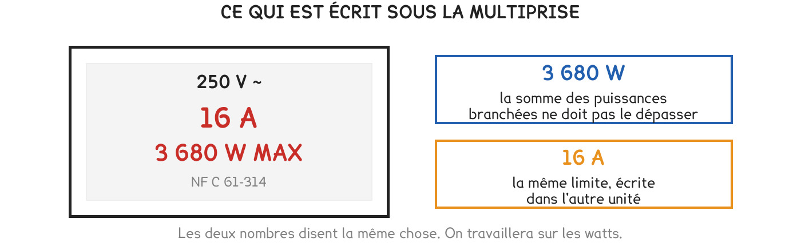

CAP Électricien · 1re année
La puissance est écrite sur l'appareil, la limite est écrite sur la multiprise. Tout tient dans une addition et une comparaison.
3 exercices · 12 items d'entraînement · 2 figures
Savoirs travaillés
La puissance d’un appareil est écrite dessus, en watts (W). Elle dit ce qu’il consomme quand il fonctionne — et plus un appareil chauffe, plus elle est grande. C’est pour cela qu’un sèche-cheveux et une lampe ne jouent pas dans la même cour.
La multiprise, elle, porte sa limite : 3 680 W. Ce n’est pas une précaution de fabricant, c’est ce que le fil supporte sans chauffer.
Brancher, c’est donc faire une addition et la comparer à cette limite. Rien de plus.
1 kW = 1 000 W. Un kilowatt vaut mille watts, comme un kilomètre vaut mille mètres.

Série · AU
Série · AU
Les appareils de la chambre, et ce qu’ils consomment :
| Appareil | lampe | chargeur | enceinte | console | radiateur | sèche-cheveux | bouilloire |
|---|---|---|---|---|---|---|---|
| Puissance | 9 W | 10 W | 30 W | 200 W | 1 000 W | 1 800 W | 2 200 W |
Les quatre premiers tiennent dans une poignée de watts, les trois derniers se comptent en milliers. Le tableau se lit en deux familles, pas en sept nombres.
Exercice · CN
La lampe, le chargeur, l’enceinte et la console sont branchés en même temps. Quel est le total ?
Exercice · CN
On branche ces deux appareils, et rien d’autre. De combien de watts dépasse-t-on la limite de la multiprise ?
Additionner des watts et des kilowatts sans convertir. 1,8 kW + 2 200 W ne fait ni 2 201,8 ni 4 000 : il faut d’abord écrire les deux dans la même unité.
Exercice · CN
En une phrase : qu’est-ce qui fait que deux appareils seulement font dépasser la limite, alors que quatre autres ensemble ne la font pas ?
La question de la séquence était : je peux tout brancher là-dessus ? La réponse tient en une ligne — deux appareils qui chauffent suffisent à dépasser —, et elle se vérifie avec une addition.
Ce site rappelle la méthode. Aucun corrigé, rien n'est noté.